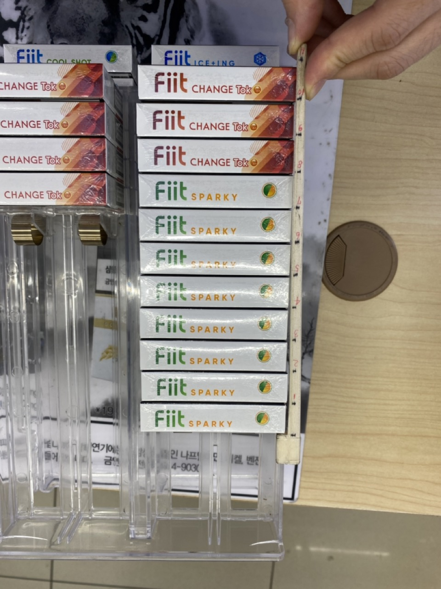

업무꿀팁

순식간에 담배 세는 '자' 만들기
약 200 종류에 다다르는 담배를 세는 건 정말 귀찮고 머리아파요.
평균 5개씩만 있다고 하더라도 1000개를 세어야 하죠.
담배를 빨리 세기 위한 방법은 여러 가지가 있겠지만, 많은 편돌이,
편순이들이 열광한 방법이 하나 있어요. 바로 일종의 자를 이용한
방식이에요. 정말 1초만에 셀 수 있어요.
담배 세는 자 ?
처음 들어보신 분도 있을 거에요. 이렇게 생겼어요 !
자세히 보시면 왼쪽은 간격이 넓고 오른쪽은 간격이 좁은데, 이는
두꺼운 담배와 얇은 담배를 세기 위해서에요.
굵은 담배는 왼쪽을 이용해서 갯수를 쉽게 알아낼 수 있어요. 자로
담배를 끝까지 밀어냈을 때, 기준점인 투명 아크릴에 맞닿은 지점의
숫자를 읽는 거에요. 이 경우 10개가 있다고, 직접 세지 않고 판단할
수 있죠.
얇은 담배는 오른쪽을 이용해서 갯수를 쉽게 알아낼 수 있어요. 이
경우 4개의 담배가 있다는 걸 알 수 있죠.
일반 담배 자 만들기
편의점 근무자시면 아시겠지만, 담배 굵기는 보통 세 가지로
나뉘어요. 두꺼운 것과 얇은 것과, 전자담배죠. 일단은 전자담배를
제외한 일반담배를 세기위한 자를 만드는 법을 알아볼게요.
만들기 전에 주의하셔야 하는 점은, 이 자는 담배 진열대의 깊이를
이용한 방식이기 때문에 담배 진열대의 깊이에 영향을 받아요.
그런데, 담배 진열대의 깊이가 매장마다, 그리고 매장 내에서도
진열대 제품마다 다르기 때문에, 제일 많은 종류의 담배를 포함한
진열대를 기준으로 만드셔야 편합니다.
진열대를 꽉 채운 뒤, 자의 맨 끝을 맨 뒤 담배와 일치시킨 뒤, 각
담배 위치마다 네임펜으로 눈금을 긋고, 숫자를 적어줘요.
이 숫자를 잘못 적는 실수를 하면 다시 만들어야하는데요! 진열대를
꽉 찬 숫자(여기선 11개)를 맨 끝 눈금에 적어주고, 아래로 내려올
수록 작은 숫자를 적어줘요.
얇은 담배도 마찬가지로 해주시면 돼요. 제 경우 얇은 담배는
21개까지 눈금이 만들어져요.
전자 담배 자 만들기
전자담배 진열대의 경우, 위아래의 2단으로 만들어지기도 합니다. 이
경우, 진열대의 깊이가 달라지기 때문에, 위의 방식으로 만든다면
기준점이 다른 2개의 자를 만들어야 해요.
하지만 그건 너무 번거롭죠! 전자담배를 위한 자는 진열대 깊이에
영향받지 않는 자를 만들거에요.

젓가락의 한 쪽을 잘라서 ㄱ(기역) 모양으로 만들면 갈고리처럼 맨
마지막 담배에 걸 수 있어요.
이 자의 숫자는, 맨 마지막 담배의 뒷부분을 0이라 기준하고,
앞부분으로 나올수록 1씩 증가하게 적어주시면 돼요. 위 사진의
경우, 젓가락 1개로 총 11개의 담배를 셀 수 있어요.
이 경우엔 눈금이 7에 걸려있고, 실제로도 7개인걸 보실 수 있어요.
이 자의 경우 젓가락을 이어붙이는 식으로 연장하지 않고 젓가락
1개만으로 사용하시는 걸 권장합니다. 자가 좁은 틈 사이로
들어가야하기도 하고, 갈고리처럼 거는 작업을 하기 때문에 내구도에
문제가 생길 수 있어서요!
실제로 사용하면 이런 모습이에요. 눈금이 6인걸 보니, 6개의 담배가
있음을 알 수 있죠.
한 번 만들어보세요 !
한 번 만들어서 해보시면 담배세는 게 전혀 머리 아프지 않을
거에요. 깊이가 다른 진열대의 경우엔 새로운 자를 만들거나,
눈금에서 1을 뺀다거나 자기만의 공식을 만들면 괜찮아요.